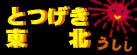
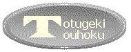

とつげき東北ｼｽﾃﾏﾃｨｯｸ麻雀研究本部．
しすま〜：ｼｽﾃﾏﾃｨｯｸ麻雀研究会 麻雀の技術を数理的・実証的に研究します。麻雀技術向上意欲のある会員・数学に強い研究員募集中。
★読み物系コンテンツ：  
日記毒と笑いととつげき東北 ギャグエッセイなんでやねん
最強毒舌議論記録衆愚の盆栽 毒舌の思想的背景黒とつ 東風荘会議室にて ２ちゃんねる関係（中傷スレ・話題スレ・アスキーアート等）
★プログラミング関係コンテンツ：
公開ソフトウェア
MJexeIO.DLL0.03（ﾌﾟﾛｸﾞﾗﾏ向東風荘画面入出力DLL）
 できすぎくん4.25（東風ツール） （安定Ｒ・保障安定Ｒって何ですか？）
できすぎくん4.25（東風ツール） （安定Ｒ・保障安定Ｒって何ですか？）
 高橋名人4.20（連射キー・トリガキー割り当て自在の超高速連打ツール）
高橋名人4.20（連射キー・トリガキー割り当て自在の超高速連打ツール）
 WinPTA1.10（WINDOWSの影でキーボード入力や起動ソフトを監視し記録する管理・保守ツール）
WinPTA1.10（WINDOWSの影でキーボード入力や起動ソフトを監視し記録する管理・保守ツール）
リンク・読み物 プログラミング関係リンク・C/C++/API微妙Ｔｉｐｓ 暗号ソフトをデザインしてみる
★麻雀関係コンテンツ：
研究・論文
システマティック麻雀工学01/31
ｼｽﾃﾏﾃｨｯｸ麻雀研究所01/20
「東風王者kamiのひみつ」 「Ｒ2000のドヘタ」 「続・Ｒ2000のドヘタ」 「流れが存在しないことの証明」
「麻雀の成績比較の方法論」 「東風荘のツモは予測できるか」
成績
とつ成績11/23
講座
最強水準になるための最新技術麻雀講座 02/05 世界で唯一の上級者向け麻雀講座
旧麻雀講座 初〜中級者向け
遊び
ヤクマン画像 クソ画像 東風うんこ画像 ★★ ドヘタ生態学 麻雀毒舌雑言
★掲示板・交流系コンテンツ：
仲間でワイワイ掲示板 上級掲示板（主として画像） アンチシスマ共同・何切る掲示板
シスマ内外★実力ランキングCGI版 1000試合以上限定版 牌譜公開・募集
プログラミング関係掲示板
ＬＩＮＫ
自動登録ＬＩＮＫ（好きにリンクしてね）
（1999年10月3日開設）
現在、私は第一東風荘最強水準雀士です( ´ｰ`)y-ﾟﾟ
新キャラをいくつも作ってＲ2300がどうのと言っているワイ卓連中とは違います。
たまたまＲが上がって調子に乗っている新米最上メンツとも違います。
データとＲ分布とから、とつげき東北は「第一東風荘最強水準」ですので。
え？ 傲慢？(笑) いや、おれ「謙虚で麻雀ドヘタ」でありたいとは思わないから(笑)。
「傲慢で麻雀最強」の方が100倍好きヽ( ´ｰ`)ﾉ。「謙虚で麻雀最強」も嫌いではないけどね(笑)。
最近質問が多いので書いておくが「とつげきとうほく」と読みます。
☆気持ちよく超ランで麻雀するために☆
遅延行為の被害への対処：
意図的な遅延行為（振ったら遅くなる、ＮＥＸＴボタンを押さない等）は東風荘において禁止行為と明確に定められています。
このような行為に遭遇した場合、対戦者３人でしっかり文句を言い、その画像と牌譜とを保存して証拠としてください。
とつげき東北に事情をそえてメールしてもらえれば、証拠が集まり次第、mjmanに当人の削除依頼を申請します。
以前この方法で、ある遅延行為プレイヤのＩＤが削除された実績があります（協力下さったmonboo氏他、ありがとう）。
快適な超ラン麻雀のため、遅延行為プレイヤを野放しにしないよう、徹底的に追い詰めていきましょう。
特に、おれ自身が遅延行為されたらむかつくのが人情。その場合あらゆる情報網を利用して本気で取り組みます。
牌のオープン、チャットオンについて：
観戦などで入ってイカサマをされる可能性があるのでランキング卓では牌を開けないことを推奨します。
牌を開けている人が一人でもおり、イカサマをやっている人がいると、他の何もしていない打ち手も不利になってしまい公平性がひどく損なわれます。
（具体的には、イカサマをする人にだけ極端に有利になってしまいます）
牌を開ける人さえいなければ、そのようなイカサマができなくなります。
イカサマができなければ、マジメに打っている人が「イカサマでは？」と中傷されたりすることも減るでしょう。
「イカサマがいても牌をあけて堂々と勝つ」のはなるほど立派ですが、牌を開けることは明らかに、イカサマや、高Ｒ者中傷などへの加担行為です。
「友達に打ち方を見せてあげたい」という人もいるでしょうし否定はしませんが、「自分の満足のために他人に迷惑をかけているのだ」と自覚して行いましょう。
とつげき東北、シスマメンバー、および第二最強水準雀士泉れいは、超ランでの伏せ牌を強く推奨します。
また麻雀の内容についてしゃべる心ない観戦者がいます。超ランでの観戦者チャットオフを推奨します。
とつ行動パターン
１）即抜けする、待合いで律儀に挨拶しない
誰が観戦にいても、誰と対戦しても、ほとんどの場合試合終了と同時に待合いに行きます。
そしてたいがい、即座に次の試合の予約をします。東風では基本的に交流よりデータ集めに重点を置いてます。
知り合いが多く、一部の知り合いと話したり話さなかったりすると「無視された」だの色々面倒なので。
待合いで挨拶をされることは非常に多いですがしばしば見逃したりするのでよろしく。また対戦中は対戦に集中します。
あと対戦中にうるさいと感じたら/i をしてます。話し掛けたのに徹底無視されたと嘆かないように（笑）。
青文字もよく届きますが、こちらは１人だけを対象に相手できないことも多いのでもしも無視してしまっても気にしないでね。
できすぎくんの質問など重要な事柄は基本的に掲示板にお願いします。
あと、おれに敬語は使わなくていいですよ。初対面でもとつとか凸とか呼んでもらっていいです。
「尊敬してます！」とかやめてね(笑)。麻雀が強い程度で尊敬されたら恥ずかしい(笑)。
からんでくれるのも大いにけっこうです。たいてい無視しますが(笑)。「失礼な」発言をしても怒らないので安心して(
´ｰ`)。
２）牌を開けない、「打ちましょう」の誘いを断る
牌は開けません。そのかわり当ＨＰ上でとつげき東北の対戦牌譜はほとんど全て公開されています。
牌を開けない理由は上に書いたとおりです。
また、「一緒に打ちませんか」に対してはけっこう断り率が高いです。
特定個人とあまり打つのはデータが偏るし、おれの場合誘われることが多くていちいち対応するのが面倒という側面もあります。
おれが打つとき「○○ 若干名募集」と卓番号を出しているのでその時に予約をするのが一番てっとり早いかと思います。
なお一応言っておきますが超ラン以外で打つことはまずありません（例えば最近3000試合は全て超ランです）。
３）毒を吐いている
待合いで毒を吐いていることがあります。
名指しで毒を吐くときは、からまれた時とかゲームの公平性を乱すほどに（特定の他家を不利にするなど）ドヘタな打ち方をされた時です。
逆に一般論として「ドヘタうぜー」とか言うのは個人批判や中傷とは違って「思想」ですので個人の自由です（それに対する反論も自由にどうぞ）。
東風は非常に自由な雰囲気があってそこが魅力です。毒を吐くことや「ドヘタな打ち方をする」ことは利用規約違反にならない範囲内で自由です。
あと、知り合い以外の掲示板におれの名を語って挑発的なカキコがあることなどがまれにありますが、そういうことはしません。
名前を偽って（匿名含む）カキコすることもありません。常に生ＩＰですのでＩＰを調べてみてね。
一般に、知り合いでなく、おれに絡んでおらず、間違った発言（「麻雀は運のみだ」など）をしていない限り、おれから絡むことはないです。